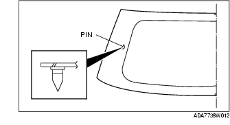
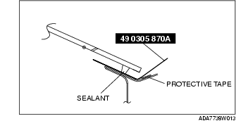

Rear window glass removal
1. Remove the rear wiper arm and blade.
2. Remove the rear wiper motor.
3. Disconnect the antenna or the filament connectors.
4. Apply protective tape along the edge of the body to protect it from damage.
Not Reusing Rear Window Glass
- • For the areas of the sealant that are difficult to cut, use the SST (piano wire) and follow the procedure under "Reusing Rear Window Glass".
1. Insert the blade into the sealant all around the glass using the SST.

2. Remove the sealant by pulling it off.
3. Remove the rear window glass.
Reusing Rear Window Glass
- • Before removing the rear window glass from the body, mark the position of the glass by affixing tape to the glass and body panel.
1. Make a hole through the sealant from the inside of the vehicle using an awl, avoiding the pins.

2. Pass the SST (piano wire) through the hole.

- • Using the SST (piano wire) with bare hands can cause injury. Always wear gloves when using the SST (piano wire).
3. Wind each end of the SST (piano wire) around a bar.
- • Use a long sawing action to spread the work over the whole length of the SST (piano wire) to prevent it from breaking.
4. Working with another person, saw through the sealant around the edge of the glass.

5. Remove the rear window glass.